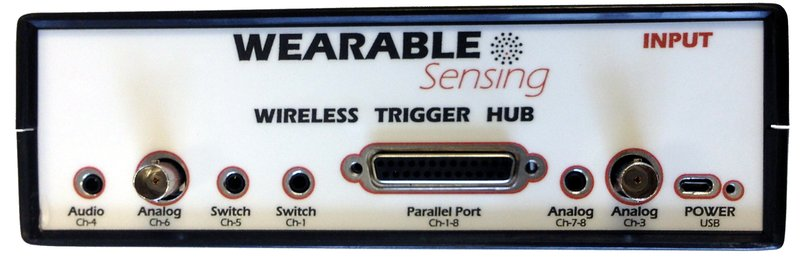

What type of external triggers are supported?#
DSI devices record triggers as unsigned integers on a dedicated trigger channel. The bit depth varies by device:
Device |
Trigger Bits |
Value Range |
|---|---|---|
DSI-24 |
8-bit |
0–255 |
DSI-EEG+fNIRS |
8-bit |
0–255 |
DSI-VR300 |
4-bit |
0–15 |
DSI-7 |
4-bit |
0–15 |
DSI-Flex |
4-bit |
0–15 |
The 8-bit devices are the only ones that use all 8 trigger data lines. The 4-bit devices (DSI-VR300, DSI-7, DSI-Flex) use data lines D1–D4 only.
Trigger values appear in DSI-Streamer as decimal numbers and are represented visually by diamonds in the lower-left corner of the screen (D1 through D8, left to right).
Hardware Triggers (MMBT-S)#
The MMBT-S is the recommended device for sending hardware triggers directly from a stimulus computer. It connects via USB, presents as a serial port, and converts writes to the serial port into TTL pulses recorded on the DSI trigger channel. Your stimulus software (PsychoPy, MATLAB, Unity, custom scripts) writes a trigger value at the moment of stimulus onset.
Trigger Hub#
The Trigger Hub consolidates up to 8 independent trigger sources into a single output connected to the DSI headset — via wired cable or wireless receiver. It is used when you need more than one trigger source or require inputs that the MMBT-S alone does not support.
{kind=link}

Trigger Hub input panel — accepts analog (BNC), audio, switch/photodetector, and parallel port inputs#
Input types:
Input |
Connector |
Use Case |
|---|---|---|
Analog (Ch-3, Ch-6) |
BNC |
Function generators, TTL/CMOS logic, any 0–20V signal |
Analog (Ch-7, Ch-8) |
3.5mm stereo |
Two-channel analog input |
Audio (Ch-4) |
3.5mm stereo |
Line-level audio — triggers on audio envelope; < 0.5ms latency |
Switch / Photodetector (Ch-1, Ch-5) |
3.5mm stereo |
Push-button events or screen flash detection via photodetector |
Parallel Port |
DB-25 |
Up to 255 trigger values from a PC’s parallel port |
All analog and parallel port inputs accept 0–20V; the threshold is adjustable from 0.63V to 5.8V via a front-panel selector. Trigger outputs are 0–5V, matching DSI headset input requirements.
Latency:
Connection |
Latency |
|---|---|
Digital / analog / switch inputs |
< 100 µs |
Audio input |
< 0.5 ms |
Wireless transmission |
12 ms ± 10 µs (compensated automatically in DSI-Streamer) |
Other features:
Wired or wireless: connects to the headset via a trigger cable (parallel port output) or a wireless receiver that plugs directly into the headset’s trigger port. Wireless range is up to 9m; up to 18m with the included repeater.
AutoTrigger: generates a 1 Hz square wave on all outputs for clock-drift alignment across multiple acquisition systems (e.g., EEG + eye tracking).
Multi-device: a single Trigger Hub can be paired to multiple wireless receivers, enabling synchronized trigger delivery across multiple headsets (hyperscanning).
Minimum pulse specs: 20ms pulse width; 40ms minimum interval between triggers.
Software Triggers (LSL)#
Software triggering is supported via Lab Streaming Layer (LSL). LSL markers are time-synchronized with the EEG stream at the recording level, making them suitable for most stimulus presentation workflows.
For full details on trigger methods, timing, and setup
See the Learning: Triggers & Event Alignment page for a complete guide covering hardware triggers, software (LSL) triggers, serial port triggering for game engines, how to measure timing offsets, and recommended reading order.